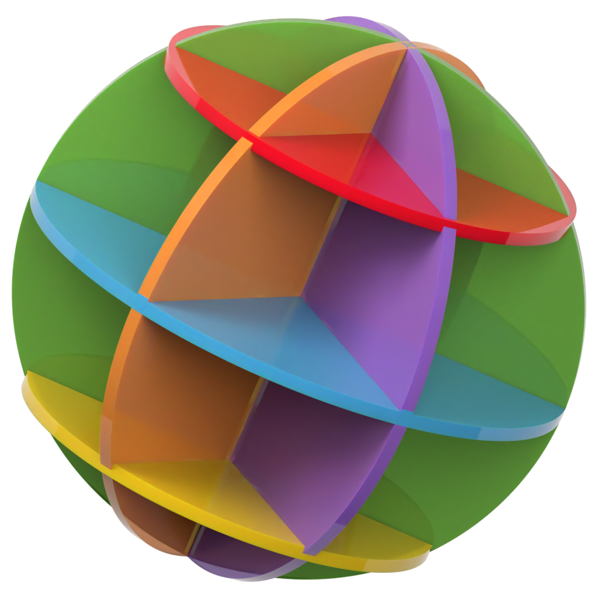

San Francisco
Horn loudspeakers, lamps and a record player, cast in tinted acrylic.
Write
hello@earf.world
See
earf.world
06 Haze
earf.world
The house card · 89 × 51 mm · uncoated 600 gsm, the eight tints on its foot · and in 1 mm cast acrylic, engraved
 San Francisco
San Francisco earf.world
earf.world